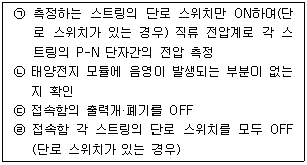
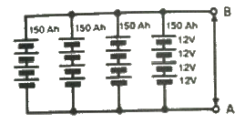
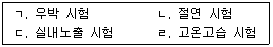
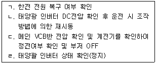
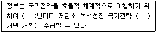

신재생에너지발전설비산업기사 (2016-10-01 기출문제)
1과목: 태양광 발전 시스템 이론
1. 50kW 이상의 태양광 발전설비에 의무적으로 설치하여야 하는 모니터링설비의 계측설비 중 전력량계의 정확도 기준으로 옳은 것은?
- 1% 이내
- 1.5% 이내
- 3% 이내
- 5% 이내
(정답률: 65%)

2. PN접합 다이오드의 P형 반도체 (+)바이어스를 가하고 N형 반도체에 (-)바이어스를 가할 때 나타나는 현상은?
- 공핍층의 폭이 작아진다.
- 공핍층 내부의 전기장이 증가한다.
- 전류는 소수캐리어에 의해 발생한다.
- 다이오드는 부도체와 같은 특성을 보인다.
(정답률: 80%)
3. 개방전압의 측정 순서를 올바르게 나타낸 것은?

- ㉢-㉣-㉡-㉠
- ㉠-㉡-㉢-㉣
- ㉡-㉢-㉣-㉠
- ㉣-㉡-㉠-㉢
(정답률: 84%)
4. 태양광 모듈의 단면을 보면 여러 층으로 이루어져 있다. 이러한 층을 이루는 재료 중에 태양전지를 외부의 습기와 먼지로부터 차단하기 위하여 현재 가장 일반적으로 사용하는 충전재는?
- FRP
- Tedlar
- EVA
- Glass
(정답률: 91%)
5. 풍력발전기와 독립형 태양발전시스템을 연계하여 발전하는 방식은?
- 독립형
- 계통연계형
- 추적식
- 하이브리드형
(정답률: 86%)
6. 태양전지의 변환요율에 영향을 주는 외부 요인이 아닌 것은?
- 기압
- 표면온도
- 방사조도
- 분광분포(air mass)
(정답률: 83%)
7. 220V, 60Hz 교류전원을 변압기를 사용하여 24V의 교류전원으로 바꾸려고 한다. 이 변압기 1차 코일의 권선수가 300회 일 때, 2차 코일의 권선수는 몇 회로 하면 되는가?
- 약 22회
- 약 33회
- 약 66회
- 약 600회
(정답률: 73%)
8. 그림의 회로는 축전지 회로 구성을 나타낸 것이다. 축전지 전체 출력단자 A와 B 사이의 전압과 축전지 용량은 각각 얼마인가? (단, 1개의 축전지용량은 12V, 150Ah이다.)

- DC 48V, 150Ah
- DC 48V, 600Ah
- DC 12V, 150Ah
- DC 12V, 600Ah
(정답률: 89%)
9. 태양전지의 열손실 요소가 아닌 것은?
- 전도
- 대류
- 풍속
- 복사
(정답률: 84%)
10. 뇌서지 등에 의한 피해로부터 태양광발전시스템을 보호하기 위한 대책으로 틀린 것은?
- 뇌우의 발생지역에서는 교류전원측에 내뢰 트랜스를 설치한다.
- 피뢰소자를 어레이 주회로 내에 분산시켜 설치함과 동시에 접속함에도 설치한다.
- 저압 배전선으로부터 침입하는 죄서지에 대해서는 분전반에 피뢰소자를 설치한다.
- 뇌서지가 내부로 침입하지 못하도록 피뢰소자를 설비 인입구에서 먼 장소에 설치한다.
(정답률: 89%)
11. 내부저항이 각각 0.3Ω 및 0.2Ω인 1.5V의 두전지를 직렬로 연결한 후에 외부에 2.5Ω의 저항 부하를 직렬로 연결하였다. 이 회로에 흐르는 전류는 몇 A인가?
- 0.5
- 1.0
- 1.2
- 1.5
(정답률: 71%)
12. 실효값이 220V인 교류전압을 1.2Ω의 저항에 인가할 경우 소비되는 전력은 약 몇 W인가?(오류 신고가 접수된 문제입니다. 반드시 정답과 해설을 확인하시기 바랍니다.)
- 14.4
- 18.3
- 26.4
- 40.3
(정답률: 64%)
13. 태양광발전의 기본 원리로서 1939년에 Edmond Bequere에 의해 최초로 발견된 현상은?
- 관기전력 효과
- 광전도 효과
- 광흡수 효과
- 관자기장 효과
(정답률: 76%)
14. 신재생에너지 중 재생에너지의 특징이 아닌 것은?
- 비고갈성 에너지이다.
- 기술주도형 자원이다.
- 친환경 청정에너지이다.
- 시설투자비가 적은 에너지이다.
(정답률: 88%)
15. 태양광발전시스템의 인버터에 대한 설명으로 틀린 것은?
- 옥내형만 가능하다.
- 자립 운전기능도 가능하다.
- 직류를 교류로 변환하는 장치이다.
- 잉여전력을 계동으로 역송전할 수 있다.
(정답률: 90%)
16. 연료전지 구성요소 중 개질기(reformer)에 대한 설명으로 옳은 것은?
- 연료전지에서 나오는 직류를 교류로 변환시키는 장치
- 수소가 함유된 일반연료(천연가스, 메탄올, 석탄 등)로부터 수소를 발생시키는 장치
- 전해질이 함유된 전해질 판, 연료극, 공기극으로 구성된 장치
- 원하는 전기출력을 얻기 위해 단위전지 수십에서 수백장을 직렬로 쌓아 올린 본체
(정답률: 78%)
17. 실리콘(Si)에 도너(donor)불순물을 인가하여 만든 반도체는?
- 진성 반도체
- P형 반도체
- N형 반도체
- 제너 다이오드
(정답률: 72%)
18. 계통연계형 인버터에서 유럽의 기후에 대해 가중된 동적 효율을 무엇이라 하는가?
- 변환효율(ηCon)
- 추적효율(ηTr)
- 정격효율(ηInv)
- 유로효율(ηEuro)
(정답률: 87%)
19. 열점(hot spot)의 발생원인과 대책에 대한 설명으로 틀린 것은?
- 태양전지 셀의 결함, 특성으로 국부적 과열로 발생된다.
- 태양전지 모듈마다 SPD를 설치하여 전압의 파고치를 저하시킨다.
- 바이패스 소자를 셀 구간마다 접속하여 역전류가 발생하면 우회시킨다.
- 나뭇잎, 새의 배설물 등의 그늘로 인한 태양전지 셀내부열화로 발생한다.
(정답률: 75%)
20. 태양광발전시스템의 접속함을 선정할 때, 주의사항으로 틀린 것은?
- 정격입력전류는 최대전류를 기준으로 선정한다.
- 접속함 내부는 최소한의 공간을 차지하도록 한다.
- 접속함의 정격전압은 태양전지 스트링의 개방시의 최대직류 전압으로 선정한다.
- 노출된 장소에 설치되는 경우 빗물, 먼지 등이 함에 침입하지 않는 구조로 한다.
(정답률: 80%)
2과목: 태양광 발전 시스템 시공
21. 태양전지 가대의 구조 설계 시 상정하중이 아닌 것은?
- 적설하중
- 지진하중
- 고정하중
- 온도하중
(정답률: 88%)
22. 설계도서 적용 시 고려사항으로 볼 수 없는 것은?
- 도면상 축적으로 잰 치수가 숫자로 나타낸 치수보다 우선한다.
- 특별시방서는 당해 공사에 한하여 일반시방서에 우선한다.
- 특별시방서 및 도면에 기대되지 않은 사항은 일반 시방서에 의한다.
- 설계도면 및 시방서의 어느 한 쪽에 기대되어 있는 것은 그 양쪽에 기재되어 있는 사항과 동일하게 다룬다.
(정답률: 77%)
23. 태양광 발전소를 설치하는 수용가의 공통접속점에서의 역률을 몇 % 이상이어야 하는 가?
- 75%
- 80%
- 85%
- 90%
(정답률: 80%)
24. 저압 배전선로의 구성 중 방사상 방식의 특징이 아닌 것은?
- 구성이 단순하다.
- 공사비가 저렴하다.
- 전압변동 및 전력손실이 크다.
- 사고에 의한 정전 범위가 좁다.
(정답률: 59%)
25. 비상주감리원의 업무가 아닌 것은?
- 기성 및 준공검사
- 설계도서 등의 검토
- 근무상황판에 현장근무위치와 업무내용 기록
- 공사와 관련하여 발주자가 요구한 기술적 사항등에 대한 검토
(정답률: 76%)
26. 건축물에 피뢰설비가 설치되어야 하는 높이는 몇m 이상인가?
- 10
- 15
- 20
- 25
(정답률: 72%)
27. 화재 시 전선배관의 관통부분에서의 방화구획 조치가 아닌 것은?
- 충전재 사용
- 난연 레진 사용
- 난연 테이프 사용
- 폴리에틸렌(PE) 케이블 사용
(정답률: 81%)
28. 접지저항은 대지저항률에 따라 크게 좌우된다. 대지저항률에 영향을 주는 요인으로 틀린 것은?
- 물리적 영향
- 온도적 영향
- 계절적 영향
- 흙의 종류나 수분의 영향
(정답률: 69%)
29. 지붕에 설치하는 태양전지 모듈의 설치방법으로 틀린 것은?
- 시공, 유지보수 등의 작업을 하기 쉽도록 한다.
- 온도상승을 방지하기 위해 지붕과 모듈 간에는 간격을 둔다.
- 모듈 고정용 볼트, 너트 등은 상부에서 조일 수 있어야 한다.
- 태양전지 모듈의 설치방법 중 세로 깔기는 모듈의 긴쪽이 상하가 되도록 설치한다.
(정답률: 85%)
30. 태양광발전시스템의 시공절차와 주의사항에 대한 설명으로 틀린 것은?
- 주철가대, 금속제 외함 및 금속배관 등은 누전사고 방지를 위한 접지공사가 필요하다.
- 태양광 발전시스템의 전기공사는 태양전지 모듈의 설치와 병행하여 진행한다.
- 공사용 자재 반입 시 레커차를 사용할 경우, 레커차의 암선단이 배전선에 근접할 때, 절연전선 또는 전력케이블에 보호관을 씌운 후 전력회사에 통보한다.
- 태양전지 모듈의 배열 및 결선방법은 모듈의 출력 전압과 설치장소에 따라 다르기 때문에 체크리스트를 이용하여 시공 전과 후에도 확인하는 것이 바람직하다.
(정답률: 78%)
31. 지중전선로는 도시의 미관, 자연재해의 사고에 대한 고신뢰도 등이 요구되는 경우에 사용된다. 지중전선로의 특징으로 옳은 것은?
- 건설비가 싸다.
- 송전용량이 적다.
- 건설기간이 짧다.
- 사고복구를 단시간에 할 수 있다.
(정답률: 75%)
32. 지붕에 설치하는 태양광발전 형태로 틀린 것은?
- 창재형
- 지붕설치형
- 톱라이트형
- 지붕건재형
(정답률: 76%)
33. 태양광발전시스템의 전기배선공사는 직류배선공사와 교류 배선공사를 들 수 있다. 직류 배선공사의 특징으로 옳은 것은?
- 교류배성공사보다 효율이 좋다.
- 감전위험이 크다.
- 절연비용이 비싸다.
- 아크소호에 유리하다.
(정답률: 72%)
34. 태양전지 어레이의 출력 확인 방법이 아닌 것은?
- 단락전류의 확인
- 절연저항의 특정
- 모듈의 정격전압 측정
- 모듈의 정격전류 측정
(정답률: 70%)
35. 감리원은 매 분기마다 공사업자로부터 안전관리 결과 보고서를 제출받아 이를 검토하고 미비한 사항이 있을 때에는 시정하도록 조치하여야 한다. 이때 공사업자가 제출하는 안전관리결과 보고서에 포함되는 서류가 아닌 것은?
- 안전보건 관리체제
- 안전관리 조직표
- 안전교육 실적표
- 건강진단서
(정답률: 90%)
36. 지붕 설치형 태양전지 모듈과 가대 지지기구의 재료에 관한 설명으로 틀린 것은?
- 태양전지 모듈의 지붕 위에서 취급이 쉽도록 짧은 변은 1m 이하, 중량은 15kg 정도 이하로 한다.
- 가대 지지기구의 재료는 장기간 옥외 사용에 견딜 수 있도록 일반 강재를 이용하여 제작 한다.
- 태양전지 셀의 색은 기본적으로 단결정은 흑색계, 다결정은 청색계, 아몰퍼스는 갈색계통이다.
- 태양전지 모듈은 작업성을 고려하여 매수를 적게하기 위해 출력이 큰 대형사이즈가 사용된다.
(정답률: 71%)
37. 변전실의 면적에 영향을 주는 요소로 틀린 것은?
- 수전전압 및 수전방식
- 변전실의 접지방식
- 변전설비 시스템 방식
- 건축물의 구조적 요건
(정답률: 72%)
38. 태양전지 모듈 설치 감정방지책으로 옳은 것은?
- 작업 시에는 일반 장갑을 착용한다.
- 강우 시 발전이 없기 때문에 작업을 해도 무관하다.
- 태양광 모듈을 수리할 경우 표면을 차광시트로 씌워야 한다.
- 태양전지 모듈은 저압이기 때문에 공구는 반드시 절연처리 될 필요가 없다.
(정답률: 85%)
39. 책임 감리원이 분기보고서를 발주자에게 제출하는 기간은 매 분기 말 다음 달 며칠 이내로 제출하여야 하는가? (관련 규정 개정전 문제로 여기서는 기존 정답인 1번을 누르면 정답 처리됩니다. 자세한 내용은 해설을 참고하세요.)
- 5일
- 7일
- 10일
- 15일
(정답률: 45%)
40. 태양광설비 시공기준에 관한 설명으로 틀린 것은?
- 실내용 인버터를 실외에 설치하는 경우는 5kW 이상 이어야 한다.
- 모듈에서 실내에 이르는 배선에 쓰이는 전선은 모듈 전용선 또는 TFR-CV 선을 사용하여야 한다.
- 태양전지 모듈에서 인버터입력단간의 전압강하는 10%를 초과하여서는 안된다.
- 역전류방지다이오드의 용량은 모듈단락전류의 2배 이상 이어야 하며 현장에서 확인할 수 있도록 표시하여야 한다.
(정답률: 48%)
3과목: 태양광 발전 시스템 운영
41. 태양광 발전시스템의 접지공사에 사용되는 접지선의 표시는 주로 무슨 색으로 하는가?
- 적색
- 백색
- 흑색
- 녹색
(정답률: 88%)
42. 산업통상자원부장관이 전기사업을 허가 또는 변경허가를 하려는 경우 심의를 거쳐야 하는 기관은?
- 전기위원회
- 전력거래소
- 한국전력공사
- 전기안전공사
(정답률: 75%)
43. 인버터 출력회로의 절연저항 측정방법으로 틀린 것은?
- 분전반 내의 분기 차단기를 개방
- 태양전지 회로를 접속함에서 분리
- 직류단자와 대지 간의 절연저항 측정
- 직류 측의 모든 입력단자 및 교류 측의 전체 출력단자를 각각 단락
(정답률: 61%)
44. 결정질 태양전지모듈 외관검사에서 태양전지모듈 외관, 셀등의 크랙, 구부러짐, 갈라짐 등의 이상유무를 확인하기 위해 몇 lx 이상의 광 조사상태에서 검사하는가?
- 800
- 900
- 1000
- 1100
(정답률: 85%)
45. 태양광발전시스템의 유지보수를 위한 점검계획시 고려해야 할 사항이 아닌 것은?
- 설비의 사용 시간
- 설비의 상호 배치
- 설비의 주위 환경
- 설비의 고장 이력
(정답률: 75%)
46. 사업용 태양광발전설비 정기검사 중 변압기검사 수검자준비 자료에 해당하는 것은?
- 계기교정시험 성적서
- 안전밸브시험 성적서
- 접지저항시험 성적서
- 태양전지 트립 인터록 도면
(정답률: 59%)
47. 보기 중 결정질 실리콘 태양전지모듈 성능시험항목의 내용을 모두 나타낸 것은?

- ㄱ, ㄴ, ㄷ
- ㄱ, ㄴ, ㄹ
- ㄱ, ㄷ, ㄹ
- ㄴ, ㄷ, ㄹ
(정답률: 68%)
48. 태양광 발전설비의 접속함 점검 사항이 아닌 것은?
- 퓨즈 상태 확인
- 조도계 센서 동작여부
- 역전류 방지 다이오드 이상 유무
- 접속부의 볼트 조임 상태 및 발열 상태
(정답률: 83%)
49. 인버터에 'Line Over Frequency Fault'로 표시되었을 경우의 현상 설명으로 옳은 것은?
- 계통전압이 규정치 이상일 때
- 계통전압이 규정치 이하일 때
- 계통주파수가 규정치 이상일 때
- 계통주파수가 규정치 이하일 때
(정답률: 80%)
50. 절연내압측정 시 최대사용전압은 태양광발전시스템에서 어떤 전압을 말하는가?
- 개방전압
- 동작전압
- 인버터 출력전압
- 인버터 입력전압
(정답률: 74%)
51. 자가용 태양광발전설비의 전력변환장치 사용 전 검사항목이 아닌 것은?
- 절연저항
- 절연내력
- 접지 시공 상태
- 역방향운전 제어시험
(정답률: 51%)
52. 절연용 방호구로 틀린 것은?
- 검전기
- 고무판
- 절연시트
- 애자커버
(정답률: 76%)
53. 인버터 절연저항 측정 시 주의사항으로 틀린 것은?
- 정격에 약한 회로들은 회로에서 분리하여 측정한다.
- 정격전압이 입·출력 시 다르르 때는 낮은 측의 전압을 선택 기준으로 한다.
- 입·출력단자에 주 회로 이외의 제어단자 등이 있는 경우 이것을 포함해서 측정한다.
- 절연변압기를 장착하지 않은 인버터는 제조사가 추천하는 방법에 따라 측정한다.
(정답률: 75%)
54. 태양광발전시스템 계측에 관한 설명 중 틀린 것은?
- 풍향·풍속 등도 중요하므로 이에 대한 계측도 필요하다.
- 직류회로의 전압은 직접 또는 PT, CT를 통해서 검출한다.
- 태양전지는 온도에 따라 변환효율이 변동되므로 온도계측도 이루어진다.
- 일사계는 보통 대지에 수평으로 설치되나 어레이와 같은 각도로 설치하는 경우도 있다.
(정답률: 72%)
55. 태양광발전용 중대형 인버터 시험 중 절연성능 시험 항목이 아닌 것은?
- 내전압 시험
- 감전보호 시험
- 누설전류 시험
- 절연거리 시험
(정답률: 50%)
56. 태양광발전모듈의 고장원인이 아닌 것은?
- 제조결함
- 시공불량
- 동결파손
- 새의 배설물
(정답률: 76%)
57. 태양광발전시스템의 계측·표시에 관한 설명으로 틀린 것은?
- 시스템의 소비전역을 낮추기 위한 계측
- 시스템에 의한 발전 전력량을 알기 위한 계측
- 시스템의 운전상태 감시를 위한 계측 또는 표시
- 시스템의 기기 및 시스템의 종합평가를 위한 계측
(정답률: 80%)
58. 태양광발전시스템의 정전 시 운영조작 순서를 올바르게 나열한 것은?

- ㄹ→ㄷ→ㄱ→ㄴ
- ㄹ→ㄴ→ㄱ→ㄷ
- ㄷ→ㄱ→ㄴ→ㄹ→
- ㄷ→ㄹ→ㄱ→ㄴ
(정답률: 79%)
59. 태양전지모듈 어레이의 일상점검 설명 중 가장 틀린 것은?
- 접속케이블에 손상 유무 점검
- 가대의 부식 및 녹 발생 여부 점검
- 표면의 오염 및 파손 점검
- 접지선의 접속 및 접속단자의 풀림 여부 점검
(정답률: 61%)
60. 태양광발전설비 운영 매뉴얼 내용으로 틀린 것은?
- 황사나 먼지 등에 의해 발전효율이 저하된다.
- 풍압에 의해 모듈과 형강의 체결부위가 느슨해질 수 있다.
- 모듈 표면은 강화유리로 제작되어 외부충격에 파손되지 않는다.
- 고압 분사기를 이용하여 모듈 표면에 정기적으로 물을 뿌려 이물질을 제거해 준다.
(정답률: 86%)
4과목: 신재생 에너지 관련 법규
61. 신에너지 및 재생에너지 개발·이용·보급 촉진법에서 기본계획읜 계획기간은 몇 년 이상으로 하는가?
- 1년
- 3년
- 5년
- 10년
(정답률: 78%)
62. 산업통상자원부장관이 혼합의무의 이행 여부를 확인하기 위하여 혼합의무자에게 대통령령으로 정하는 바에 따라 필요한 자료의 제출을 요구하였으나 따르지 아니하거나 거짓 자료를 제출한 자에게는 얼마 이하의 과태료를 부과하는가?
- 1천만원
- 2천만원
- 3천만원
- 4천만원
(정답률: 54%)
63. 전기사업법에서 대통령령으로 정하는 기본계획의 경미한 사항을 변경하는 경우 중 전기 설비별 용량의 몇 %의 범위에서 그 용량을 변경하는 경우를 말하는가?
- 10
- 20
- 30
- 40
(정답률: 61%)
64. 다음 ( )에 공통으로 들어갈 내용으로 옳은 것은?

- 3
- 4
- 5
- 10
(정답률: 66%)
65. 주무부처 장관의 허가를 받아 두 종류 이상의 전기사업을 할 수 있는 경우가 아닌 것은?
- 도서지역에서 전기사업을 하는 경우
- 발전사업자가 전기판매사업을 하는 경우
- 배전사업과 전기판매사업을 겸업하는 경우
- 발전사업의 허가를 받은 것으로 보는 집단에너지 사업자가 전기판매사업을 겸업하는 경우
(정답률: 70%)
66. 산업통상자원부장관이 신·재생에너지의 이용·보급을 촉진하기 위하여 필요하다고 인정하면 대통령령으로 정하는 바에 따라 진행하는 보급사업으로 틀린 것은?
- 정부와 연계한 보급사업
- 신기술의 적용사업 및 시범사업
- 실용화된 신·재생에너지 설비의 보급을 지원하는 사업
- 환경친화적 신·재생에너지 집적화단지 및 시범단지 조성사업
(정답률: 63%)
67. 태양전지 모듈은 최대사용전압 몇배의 직류전압을 충전부분과 대지사이에 연속하여 10분간 가하여 절연내력으르 시험하였을 때 이에 견디어야 하는가?
- 0.92
- 1
- 1.25
- 1.5
(정답률: 71%)
68. 전기사업자는 전기사업용전기설비의 설치공사 또는 변경공사로서 산업통상자원부령으로 정하는 공사를 하려는 경우에는 공사계획에 대하여 누구에게 인가를 받아야 하는가?
- 대통령
- 시·도지사
- 전기위원회
- 산업통상자원부장관
(정답률: 67%)
69. 신에너지 및 재생에너지 기술재발 및 이용·보급에 관한 계획을 협의하려는 자는 그 시행 사업연도 개시 몇 개월 전까지 산업통상자원부장관에게 계획서를 제출하여야 하는가?
- 1개월 전
- 3개월 전
- 4개월 전
- 6개월 전
(정답률: 44%)
70. 공사업을 하려는 자는 산업통상자원부령으로 정하는 바에 따라 누구에게 등록하여야 하는가?
- 시·도지사
- 전기공사협회
- 한국전기기술인협회
- 산업통상자원부장관
(정답률: 67%)
71. 산업통상자원부장관은 전기사업자가 금지행위를 한 경우에는 전기위원회의 심의를 거쳐 대통령령으로 정하는 바에 따라 그 전기사업자의 매출액의 얼마 범위에서 과징금을 부과·징수할 수 있는가?
- 100분의 5
- 100분의 10
- 100분의 20
- 100분의 40
(정답률: 49%)
72. 산업통상자원부장관이 혼합의무의 이행 여부를 확인하기 위하여 혼합의무자에게 대통령령으로 정하는 바에 따라 필요한 자료의 제출을 요구할 경우 신·재생에너지 연료 혼합의무 이행확인에 관한 자료로 틀린 것은?
- 수송용연료의 생산량
- 수송용연료의 수출입량
- 수송용연료의 해외판매량
- 수송용연료의 자가소비량
(정답률: 58%)
73. 산업통상자원부장관이 정하여 고시하는 신·재생에너지의 가중치의 산정 시 고려사항으로 틀린 것은?
- 전력 판매가
- 지역주민의 수용 정도
- 전력 수급의 안정에 미치는 영향
- 온실가스 배출 저감에 미치는 효과
(정답률: 77%)
74. 전기사업의 허가를 신청하는 자가 사업계획서를 작성할 때 태양광설비의 개요로 기재하여야 할 내용이 아닌 것은?
- 집광판(集光板)의 면적
- 태양전지 및 인버터의 효율, 변환방식, 교류주파수
- 인버터의 종류, 입력전압, 출력전압 및 정격출력
- 태양전지의 종류, 정격용량, 정격전압 및 정격 출력
(정답률: 72%)
75. 저탄소 녹색성장 추진의 기본원칙으로 틀린 것은?
- 정부는 시장기능을 최대한 활성화하여 정부가 주도하는 저탄소 녹색성장을 추진한다.
- 정부는 사회·경제 활동에서 에너지와 자원이용의 효율성을 높이고 자원순환을 촉진한다.
- 정부는 국민 모두가 참여하고 국가기관, 지방자치단체, 기업, 경제단체 및 시민단체가 협력하여 저탄소 녹색성장을 구현하도록 노력한다.
- 정부는 국가의 자원을 효율적으로 사용하기 위하여 성장잠재력과 경쟁력이 높은 녹색기술 및 녹색산업 분야에 대한 중점 투자 및 지원을 강화한다.
(정답률: 75%)
76. 발전기·연료전지 또는 태양전지 모듈(복수의 태양전지 모듈을 설치하는 경우에는 그 집합체)에 시설되는 계측하는 장치를 사용하여 측정하는 사항으로 틀린 것은?
- 전압
- 전류
- 전력
- 역률
(정답률: 74%)
77. 공사업자의 등록취소사항에 해당되지 않는 것은?(오류 신고가 접수된 문제입니다. 반드시 정답과 해설을 확인하시기 바랍니다.)
- 부정한 방법으로 공사업의 등록을 한 경우
- 시정명령 또는 지시를 이행하지 아니한 경우
- 최근 5년간 3회 이상 영업정지처분을 받은 경우
- 공사업을 등록한 후 1년 이내에 영업을 시작하지 아니한 경우
(정답률: 62%)
78. 전기의 원활한 흐름과 품질유지를 위하여 전기의 흐름을 통제·관리하는 체제를 무엇이라 하는가?
- 전기관리
- 전력계통
- 전력시스템
- 전력거래사업
(정답률: 77%)
79. 개인대행자가 안전관리업무를 대행할 수 있는 태양광발전설비의 규모는 몇 kW 미만인가?
- 100
- 250
- 500
- 1000
(정답률: 56%)
80. 대지전압이 150V 초과 300V 이하인 경우에 절연저항 값은 몇 MΩ 이상이어야 하는가?
- 0.2
- 0.3
- 0.5
- 1
(정답률: 76%)